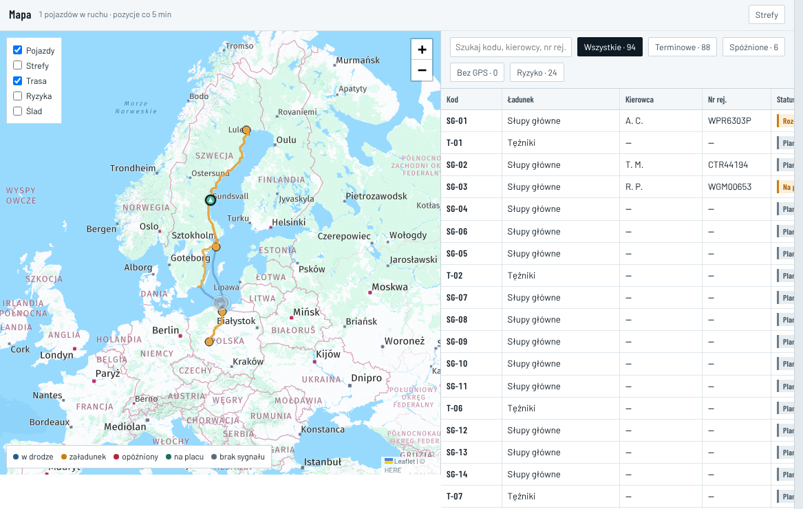
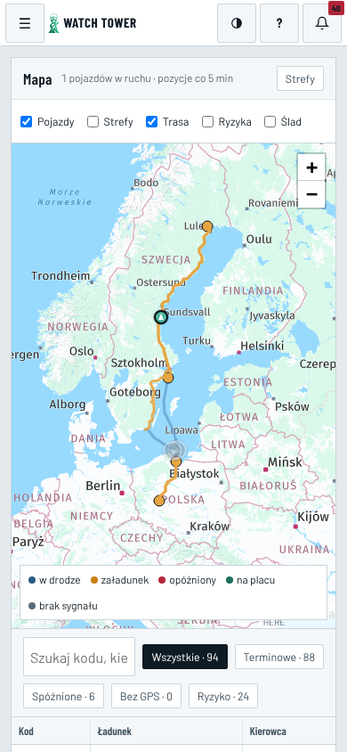
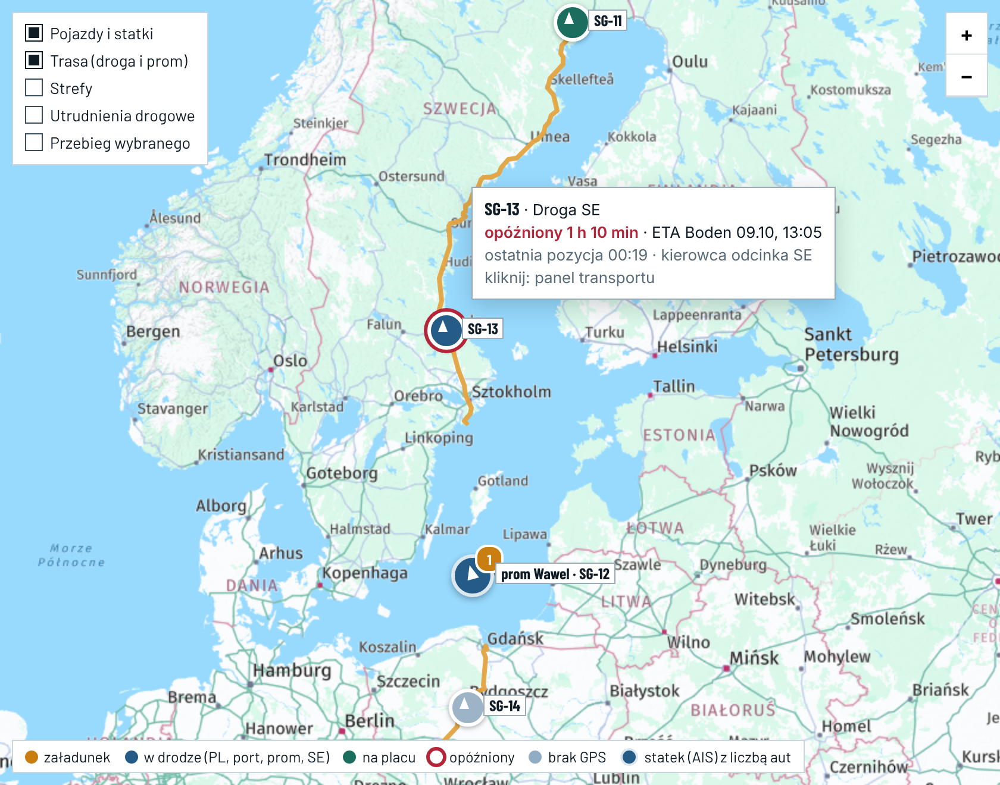
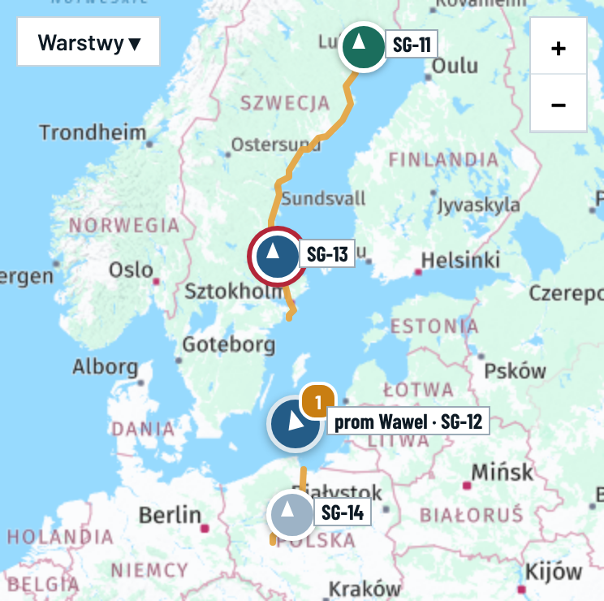

E29 · Mapa: warstwy, lista, filtry, legenda · komputer i telefon
„Dziś” — zrzuty 08.10, 00:1x i dane z bazy · „po zmianie” — Przykład: pozycje, opóźnienia, ETA i rejs zmyślone; kody transportów, trasa drogowa HERE i podkład prawdziwe
Dziś
Mapa · komputer 1366 pxlista 94 · tabela ucięta

Jedyny znacznik to SG-03, opisany jako „Na placu”. Stoi w okolicach Hudiksvall, 496 km od placu. Pomarańczowe kropki usuwa E45. Z 7 kolumn tabeli widać 4,5, a ETA i Okno są poza ekranem.
Telefon 390 px

Menu ☰ zamiast dolnego paska (E8). Checkboxy i legenda zajmują 2 rzędy. Tabela ma 7 kolumn przewijanych w bok.
Fakty 08.10
- „1 pojazdów w ruchu” to SG-03 po dostawie. Ostatnia pozycja 07.10, 21:23, a status nadal „Na placu” (E26, E27).
- „pozycje co 5 min”: SG-03 nadawało co 2,4 min w ruchu (mediana z 307 pozycji) i co 15 min na postoju (76).
- „Bez GPS · 0” jest zawsze 0. Aplikacja nie wypełnia czasu ciszy GPS.
- „Spóźnione · 6” liczy też transporty przed wyjazdem (4 planowane, 1 gotowy).
- Warstwa „Ryzyka” to utrudnienia drogowe z Trafikverket, a nie ryzyka.
- Legenda ma kolory „opóźniony” i „brak sygnału” dla statusów, których baza nie ma.
- Podpis znacznika pokazuje ciągnik z odcinka PL (WGM00653), choć w Szwecji jechał inny ciągnik.
- Dopisek „Schemat korytarza… z zezwolenia, nie wynik routera” jest nieaktualny po E45.
Po zmianie · komputer · HHL
Przygotowanie88
Załadunek0
Droga PL1
Port PL0
Prom1
Port SE0
Droga SE1
Plac Boden1
Dostarczone2
Rozliczenie0
MapaW oknie śledzenia 6 · z pozycją 4 · bez pozycji 2 — od 03:00 w dniu załadunku do „Dostarczone”StrefyPrzykład

Podkład i trasy: HERE · utrudnienia: Trafikverket (SE), HERE (PL, E2) · statki: AIS Fintraffic / digitraffic.fi, CC BY 4.0, ostatni odczyt 00:14. W makiecie bez linii promu — rysuje ją E45 z HERE.
Szukaj: kod, nr zlecenia, tablice
W oknie · 6Opóźnione · 1Brak GPS · 1Bez pozycji · 2
| Transport | Etap | Pozycja | ETA Boden |
|---|
| SG-13 | Droga SE | 00:19 | 09.10, 13:05 +1 h 10 min po oknie |
| SG-14 | Droga PL | brak GPS od 22:40 próg 30 min w ruchu (E15) | 10.10, 06:10 z ostatniej pozycji |
| SG-12 | Prom Wawel · Gdańsk → Nynäshamn | 00:14 statek (AIS) | 09.10, 21:40 |
| SG-11 | Plac Boden | 00:12 | na placu od 23:05 |
| SG-15 | Przygotowanie dzień załadunku 08.10 | brak pozycji brak linku śledzenia · Do zrobienia SCX | – |
| SG-16 | Przygotowanie dzień załadunku 08.10 | brak pozycji brak linku śledzenia · Do zrobienia SCX | – |
Tabela pokazuje to samo co mapa: transporty w oknie śledzenia. Kafelek z paska (E28) zmienia zakres, np. „Przygotowanie” pokaże 88 transportów bez pozycji — mapa ich nie rysuje, a tabela mówi dlaczego. Najechanie na wiersz podświetla znacznik, kliknięcie otwiera panel. Nazwa według firmy (E41): HHL „SG-13 · nr HHL”, gdy jest wpisany.
Po zmianie · telefon
Mapaw oknie 6 · bez pozycji 2
Przygotowanie88Droga PL1Prom1Droga SE1Plac1

W oknie · 6Opóźnione · 1Brak GPS · 1
SG-13 opóźniony 1 h 10
Droga SE · pozycja 00:19 · ETA 09.10, 13:05
SG-14 brak GPS od 22:40
Droga PL · ETA 10.10, 06:10 z ostatniej pozycji
KokpitHarmonogramRyzykaDokumentyWięcej
Mapaw oknie 6 · bez pozycji 2
SG-13Droga SEopóźniony
ETA Boden 09.10, 13:05 · 1 h 10 min po oknie KSH
Ostatnia pozycja 00:19 · kierowca i zestaw odcinka SE
Otwórz panel transportu
Pokaż przebieg na mapie
Mapaw oknie 6 · bez pozycji 2
Warstwy
Pojazdy i statki
Trasa (droga i prom)
Strefy
Utrudnienia drogowe
Przebieg wybranego transportu
Każda firma
- Ta sama mapa i lista. Każda firma widzi swoje transporty (dziś wszystkie 94).
- Nazwy według E41. KSH widzi „SG-13”, SCX „SG-13 · nr SCX”.
- Przycisk „Strefy” ma tylko HHL, bo tylko HHL ma tę stronę w menu.
- „Do zrobienia” przy braku pozycji widzi firma, która ma to uzupełnić (E7).